UX audit: Data export
Data state found: the Organization "Prizic Demo" has
zero exports and zero schedules (verified,
screenshots 01 and 04). So the in-progress, failed, expired and ready
states, the history table, the download and the schedule table with
rows were never on screen. Those are judged from the components and
the feature docs only and are marked inferred. I did not request an
export to create data, and I did not press Download, because a
download writes a data_export.downloaded audit record in
the same transaction (read in download/route.ts), which
breaks the "records nothing beyond a read" condition.
1. Verdict
-
Could the persona use it unaided? Partly. An owner
who wants "all guests as a spreadsheet" can find the page, tick one
box and ask. An accountant who wants "everything for 2025 for the tax
office" cannot: there is no date range, no statement of scope, and the
file is named
export-1a2b3c4d.csv(inferred). - Biggest risk: the form promises more than it delivers, and says nothing about what it leaves out. It offers five datasets to every role, pre-ticks two the Finance role may not be allowed to export, and does not say that several modules (staff, payroll, rates, food and beverage, inventory, maintenance) cannot be exported at all. "Nothing is trapped" cannot be confirmed from this page.
- Defect to fix first: a user without the permission who types the URL is told "This module is not in your Subscription", which is false (verified, DX-01).
-
The default selection (Guests plus Reservations, as CSV) produces
one stacked file with
# dataset:section lines (inferred fromrender.ts, doc EXP-DEF-02), which a new system will not import as a guest list (DX-03). - Counts: 21 findings: 1 blocks work, 6 cause errors, 6 slow me down, 8 polish. Thirteen rest at least partly on something I saw in the app; eight are inferred from code only.
2. Findings
| ID | Severity | Where | What happened | What I expected | Suggested fix | Effort | Evidence | Status |
|---|---|---|---|---|---|---|---|---|
| DX-01 | causes errors |
/en/data-export, Front Desk and Housekeeping, typed
URL
|
The page shows "This module is not in your Subscription. It
appears here once your Organization subscribes to it and the
Property has it enabled." The same Organization shows the module
to Owner, Manager and Finance, so the Subscription is not the
cause: the Front Desk and Housekeeping roles lack
data_export.read. The rail correctly hides the
entry for both. Housekeeping showed exactly the same text (read
from the page, no separate screenshot).
|
"You do not have permission to export data. Ask an Owner." A front-desk user told the company has not subscribed will report a billing problem or stop asking. |
In page.tsx the single
!property branch covers both "not entitled" and "no
permission". Split it: when the Property is entitled but the
role lacks the permission, render a permission message.
|
S | 09-frontdesk-typed-url.png; reproduced on a second role (Housekeeping) | verified screen, inferred cause |
| DX-02 | causes errors | New Export form, Finance and Manager |
The form is identical for every role: all five datasets are
enabled, Guests and Reservations are pre-ticked. Per the docs,
Guests and Reservations need a front-desk permission and the
Audit log needs audit.read (EXP-S1-01, EXP-DEF-04
says the guest rule "excludes Finance and Housekeeping"). The
refusal happens on submit, with one generic sentence "You may
not request an export of these datasets" that does not say which
(EXP-S1-46 states this is deliberate). I did not press submit to
see it.
|
The Finance accountant should see only what the role may export, with Folios and Payments ticked, or each blocked dataset disabled with a one-line reason. Pressing the default button should not be a guaranteed refusal. |
Expose the role's allowed datasets to the form (the map exists
in app.data_export_resource_permissions()), disable
the rest with "needs front desk access", pre-tick the allowed
set. Whether Finance holds data_export.create at
all is unknown.
|
M | 08-finance-new-export.png, 10-manager-new-export.png (form identical to Owner's in 02) | verified form, inferred refusal |
| DX-03 | causes errors | New Export, any role, default state |
The form opens with Guests and Reservations ticked and CSV
chosen. When several datasets are chosen in CSV, the code stacks
them in one file, each under a # dataset: name line
with a blank line between (renderCsv), and a
spreadsheet opens it as one sheet. The form does not say this.
Someone who wants "my guest list for the new software" and does
not untick Reservations gets a file that no importer reads.
Documented as deferred (EXP-DEF-02).
|
Either one file per dataset, or a visible line under the datasets: "Several datasets in CSV are stacked in one file. Choose one dataset per export if you want to import it." Better: pre-tick nothing. | Short term: pre-tick nothing and add the sentence when two or more datasets and CSV are chosen. Long term: zip of one CSV per dataset (EXP-DEF-02). | S for the warning, L for the zip | 02-owner-new-export.png, 03-owner-new-export-full.png | verified default and silence, inferred file shape |
| DX-04 | causes errors | New Export and Create Schedule, all roles | The page never says what an export contains in scope. Code: it is every row, all dates, everything the requester can read (EXP-S1-23, reach not the Property in the header). The header shows "Demo Otel İstanbul" and the description says "your organization". An owner of two Properties cannot tell whether the file is this hotel or both, and the accountant cannot tell whether it is this year or all time. | A one-line scope statement above the Request button: "All dates. Properties you have access to: A, B." Plus a date range (see Not built). | Add the scope line first (S). Date range is backend work. | S | 03-owner-new-export-full.png | verified absence of text, inferred actual scope |
| DX-05 | blocks work | Any export that grows past 100,000 rows in one dataset or 25 MiB |
The export fails with "Too large to export." and nothing else.
With no date range and no way to export one Property or a
smaller piece, the owner has no way to make it smaller. The
limit is 100,000 rows per dataset and 25 MiB per file
(contracts.ts, EXP-S1-45, runner.ts).
Folio lines and the audit log of a busy hotel will reach 100,000
rows. Failing loudly rather than truncating is correct; the dead
end is the problem. Not seen on screen (empty data).
|
The failed row says what to do ("Choose fewer datasets or a shorter period") and the form offers a way to narrow. | Add a next step to the failure text now (S); a date range makes it actionable (M, backend). | S to M | none (inferred, no data) | inferred |
| DX-06 | causes errors | New Export form, download | The Guests dataset is names, emails, phone numbers; Folio lines carry free-text descriptions; the Audit log carries context. Nothing on the page warns that the file contains personal data, how long it stays available (7 days is shown only on a ready row, never on the form), or who can download it (anyone holding the read permission plus the dataset permissions, EXP-S1-38). The only hint is the card text "Names, email addresses and phone numbers". | A sentence on the form: "This file contains guest personal data. Store it securely. Anyone with export access can download it for 7 days. Requests and downloads are logged." Turkish customers will expect a KVKK note. | Add the notice to the form and to the ready row. | S | 03-owner-new-export-full.png | verified absence |
| DX-07 | causes errors | New Export form, all roles |
The five datasets are the only things that can leave: guests,
reservations and stays, rooms and beds, folios and payments,
audit log (datasets.ts). Staff, HR and payroll,
rates, food and beverage, inventory, maintenance requests,
housekeeping history and guest-experience requests have no
dataset. The page does not say so. For "be sure nothing about
the hotel is trapped", the owner is falsely reassured by a list
that looks complete. A fifth caveat: after a Subscription ends,
every dataset except the audit log returns no data (EXP-DEF-03,
owner decision still open).
|
A short "Not included yet" list under the datasets, or a link to a page saying how to get the rest. | Add a static note listing what is not included. Whether to build the rest is a product decision (see section 6). | S | 03-owner-new-export-full.png | verified absence, inferred missing modules |
| DX-08 | slows me down | Downloaded file, all roles |
The filename is export- plus the first 8 characters
of the id plus the extension (migration
20260916010710, line 550; the link falls back to
the same pattern). Twenty exports a quarter means twenty
indistinguishable files in the Downloads folder, with nothing to
say which hotel, dataset or date.
|
Something like prizic-demo-guests-2026-10-11.csv.
|
Build the name in the database function from Organization, dataset keys and the request date. | S | none | inferred |
| DX-09 | slows me down | Export history table, ready row |
The table shows requested time, requester, datasets, format,
status, size, action. The record counts per dataset are stored
(recordCounts, and a "Records" header string exists
in the messages) but the table does not render them. A 1 KB size
is the only clue that an export is empty, and an empty dataset
keeps its header row (EXP-S1-43), so it looks like a success.
|
"1,248 guests, 3,102 reservations" on the row, so the owner can check the number against what they know before trusting the file. |
Render recordCounts in the datasets cell or a
Records column.
|
S | none (no rows) | inferred |
| DX-10 | slows me down | Downloaded CSV and JSON, accountant |
Columns are raw database names:
amount_minor (integer minor units, so 5000 means
50.00), reservation_status, stay_type,
UUID ids, created_at as an ISO instant (UTC). The
Folios card promises "charges, payments, and balances" and the
column list has no balance column. No VAT or tax column and no
invoice-style layout. An accountant will need to rebuild the
file before the tax office can use it.
|
Headers in plain words in the user's language, money as decimals with the currency, and the card text matching what the file holds. | Correct the card text now (S). Human-readable headers and decimal amounts are a design decision (M). | S to M | none |
inferred from
datasets.ts and render.ts
|
| DX-11 | slows me down | History table, pending / processing / failed / expired rows |
While waiting, the row shows an italic "Pending" or "Processing"
with no elapsed time. The worker picks requests up every 15 s
and the page re-reads every 5 s
(data-export.service.ts,
data-export-view.tsx), so a normal wait is about 20
s. If the worker is down, a pending row has no timeout in the
UI; the sweep only fails a processing row after 30
minutes (EXP-S1-31). Failed and expired rows end with a reason
or a word and no button to request the same thing again. Whether
the worker is running on staging is
unknown.
|
"Requested 14 minutes ago, still waiting" in a warning tone after a few minutes, and a "Request again" button on failed and expired rows that reopens the form with the same choices. | Add elapsed time and "Request again". | M | none | inferred |
| DX-12 | slows me down | Schedules tab and Create Schedule form | The form asks for name, frequency (daily, weekly, monthly), format and datasets. It does not ask for a weekday or time of day and does not say when the first run will be (the code sets it one step from now, EXP-S1-34). A paused schedule shows only "Paused", with no reason, even when it was paused because the creator lost permission (EXP-S1-33). There is no edit or delete in the table, only Pause and Resume. The card says "Active Export Schedules" but lists paused ones too. Each run just lands in the history for 7 days; nobody is emailed. The example name "Weekly Financial Backup" (Turkish placeholder) and the JSON hint "backup" suggest a backup, while a monthly schedule's file expires after 7 days unless somebody logs in to fetch it. | Say when it runs and where the result appears, show why a schedule is paused, and be honest that this is not a backup. | Add the "next run" text and the "appears here for 7 days" line to the form; add a paused reason; rename the card. | M | 05-owner-new-schedule.png (form, empty state); table rows not seen | verified form, inferred table behaviour |
| DX-13 | slows me down | Ready row, Download link |
The download route returns a bodiless 404 for any file the
downloader may no longer have (requester lost a right since
asking, EXP-S1-40, or it has expired but not yet been cleared).
The link is a plain <a download>, so the
click ends in a browser "failed" download or an empty tab with
no message in Ranza.
|
A readable message: "This file is no longer available. Request it again." | Return a small JSON or redirect to the page with a toast. | S | none | inferred |
| DX-14 | polish | 768 px wide, Owner | The page scrolls sideways: document width 885 px in a 768 px viewport. The "Create Export Schedule" button is cut off at the right edge ("Create E") and the breadcrumb reads "WORKSP". Measured twice (screenshot, then script). At 375 px there was no horizontal overflow. | The action buttons wrap below the tabs at 768 px. | Allow the tab/button row to wrap. | S | 13-owner-768.png; reproduced Y | verified |
| DX-15 | polish | Metric tiles, all sizes | Four large tiles sit above the work: "Recent Export Records 0", "Ready 0", "Active Export Schedules 0", and a tile titled "Requested At" holding "—" (it means the time of the last export). On a phone they fill the first screen and push the actions below the fold. "Recent Export Records" is a count of the last 50 at most (the list reads up to 50, EXP-S1-12), so a count of 50 is a cap, not a total. | Short labels ("Exports", "Ready", "Schedules", "Last export") and smaller tiles, or none. | Rename the tiles; drop them on small screens. | S | 01-owner-history.png, 12-owner-375-viewport.png | verified layout, inferred cap |
| DX-16 | polish | Header of the page, all roles | "Export History" and "Schedules" are tabs; "New Export" and "Create Export Schedule" are buttons that swap the same panel. When a button is active, no tab is highlighted, so there is no marker for where I am, and the form has no Cancel. After a successful request the page returns to History by itself after one second. | Four views as one navigation, or two forms opened as a panel with a Cancel link. | Make the four panels one tab set, or add Cancel. | S | 02-owner-new-export.png, 05-owner-new-schedule.png | verified |
| DX-17 | polish | New Export vs Create Schedule | Same decisions, different controls and defaults: New Export pre-ticks Guests and Reservations and picks format with cards; Schedule pre-ticks Guests and Folios and picks format with a dropdown. The buttons are "Create Export Schedule", "Create Schedule" and (Turkish) "Planı Kaydet". Titles are Title Case ("Recent Export Records") while other screens use sentence case ("Needs attention", "Today's movements"). | One shared dataset picker and one default. | Reuse the same component. | S | 03 and 05 | verified |
| DX-18 | polish | /ar/data-export |
The format hint "Excel, Numbers, Sheets" is rendered as "Sheetsو Numbersو Excel" with the conjunction attached to the wrong word, because Latin product names sit in a right-to-left line. Everything else mirrors correctly. | The three names read in order with the Arabic "and" between them. | Wrap the product names in a left-to-right span. | S | 07-owner-arabic.png | verified |
| DX-19 | polish | Export history and schedule tables |
The tables format times with
toLocaleString(locale) in a client component, so
the time shown is in the browser's time zone and with
the locale's short date, not in the Property's zone
(Europe/Istanbul) that the Today page shows. The file itself
holds UTC ISO instants. An accountant abroad will see a
different time from the audit log.
|
Property time zone, with an unambiguous date. | Format on the server with the Property time zone. | S | none | inferred |
| DX-20 | polish | History table at 375 px |
The Download button is the last of seven columns inside an
overflow-x-auto wrapper, so on a phone the person
must scroll sideways to find the one thing the page is for. No
row exists on staging to see it.
|
On narrow screens each export is a card with Download visible. | Card layout below sm. |
M | none | inferred |
| DX-21 | polish | New Export, format picker, keyboard only |
The CSV and JSON choice is a visually hidden radio inside a
card. Moving focus to the JSON radio (it holds focus:
document.activeElement was that radio) changes
nothing on screen: no outline, no shadow, no border change on
either card, and CSV still looks selected. A keyboard-only user
cannot see where focus is or what is chosen. The dataset
checkboxes are visible controls and were not tested for focus
rings.
|
A visible focus ring on the card that holds focus, and the selected card clearly marked. |
Add focus-within ring classes to the two format
labels (and the dataset labels).
|
S | 14-owner-keyboard-format-focus.png; reproduced once (computed style: outline none, box-shadow none) | verified |
Screenshots cited above
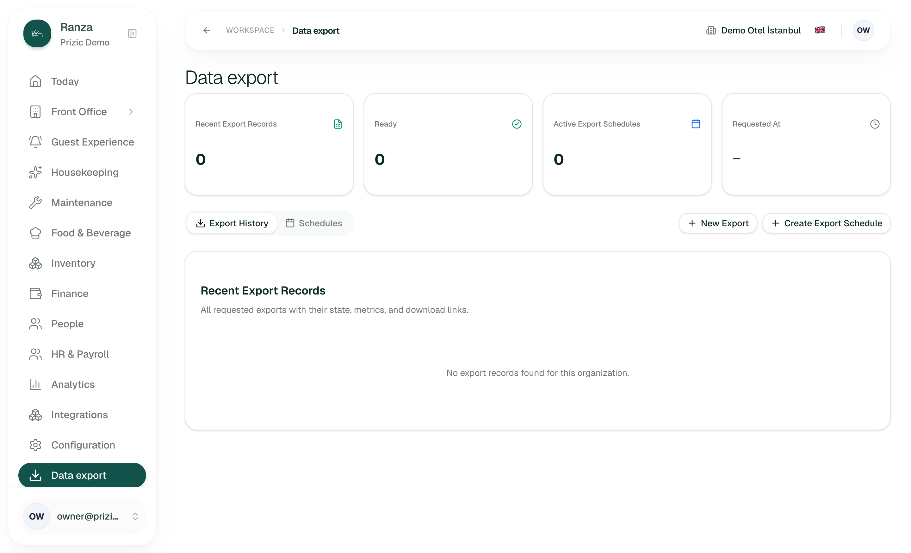
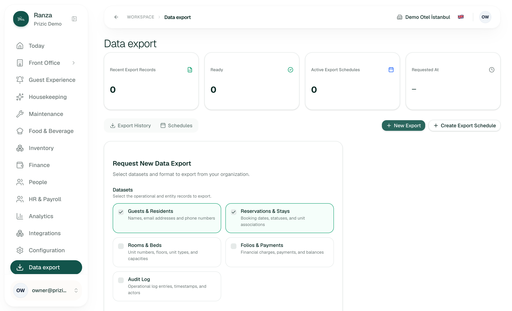
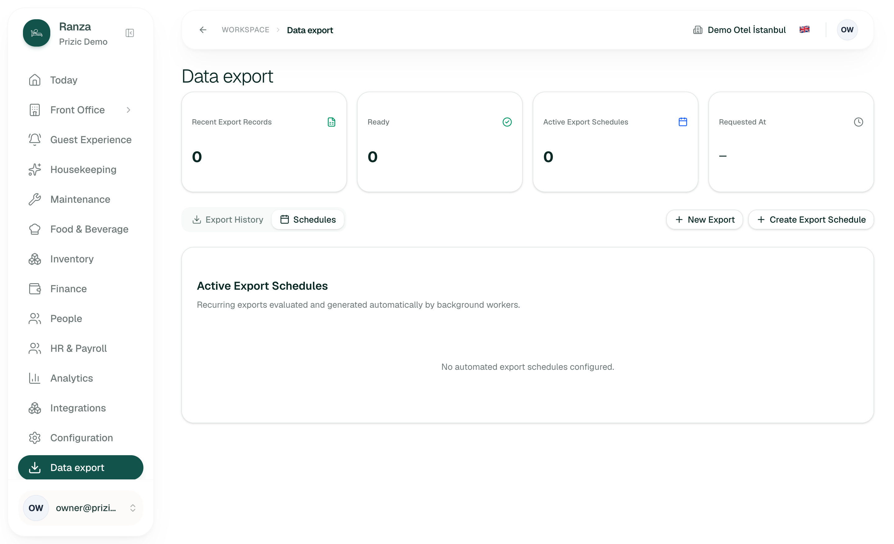
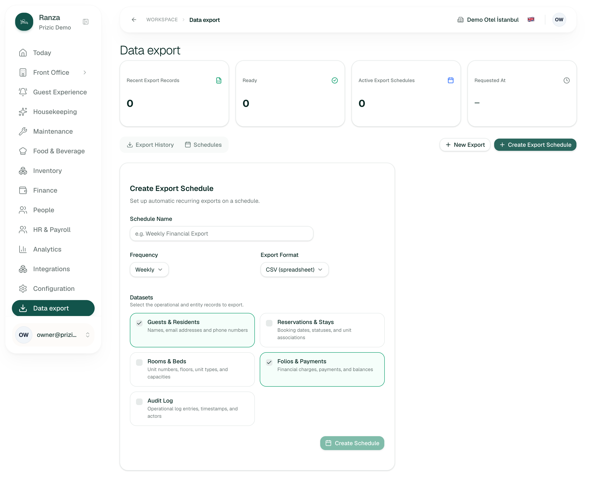
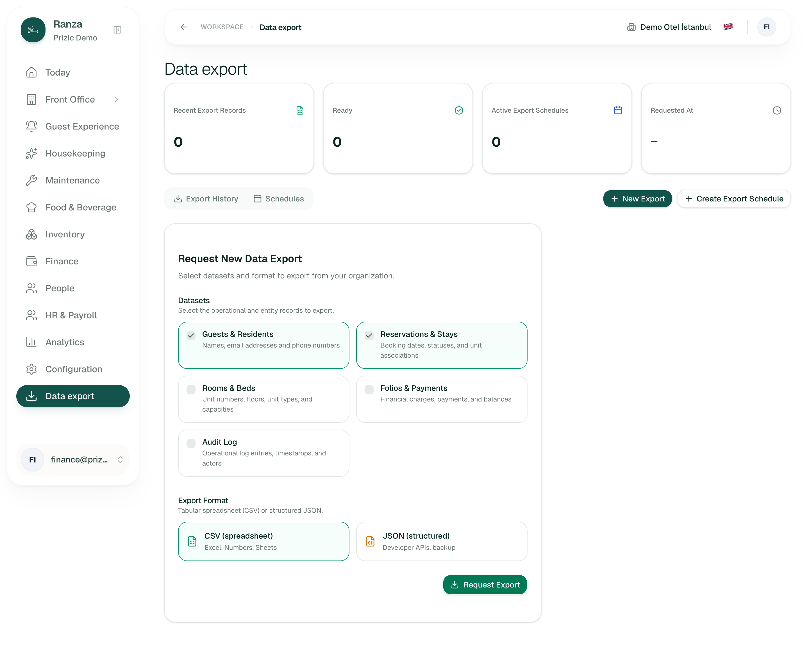
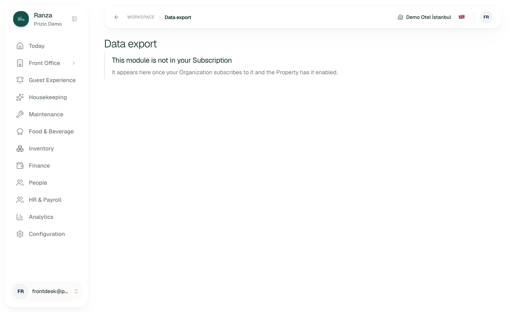
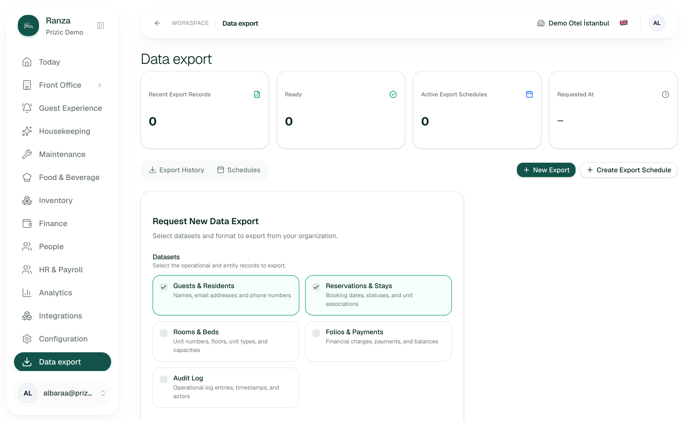
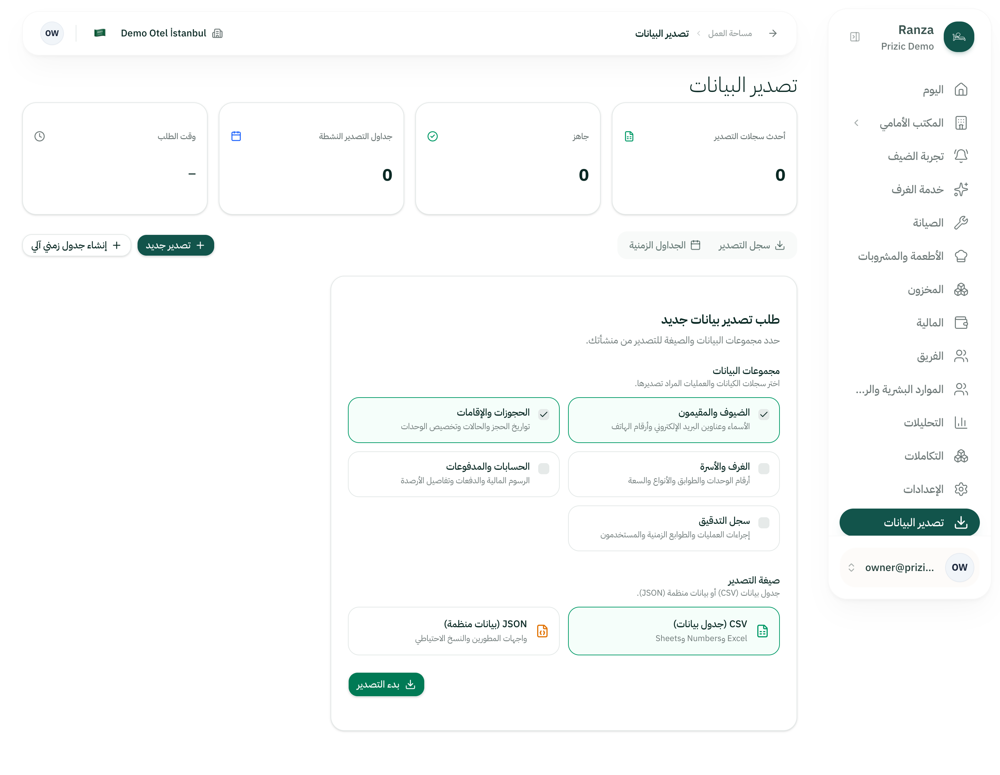
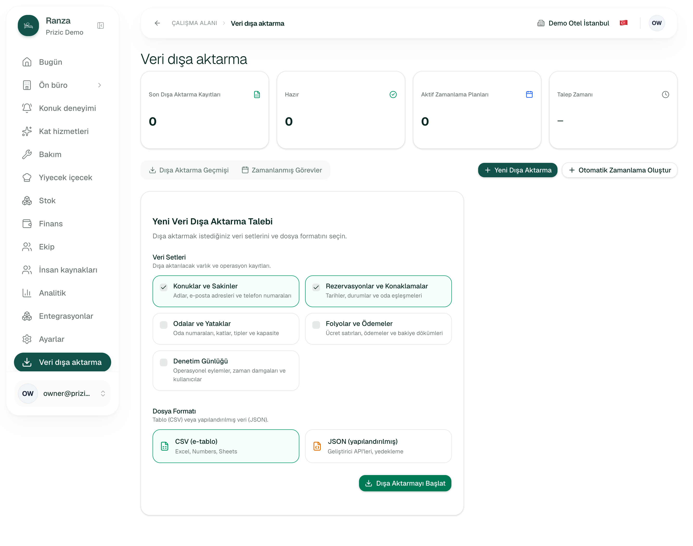
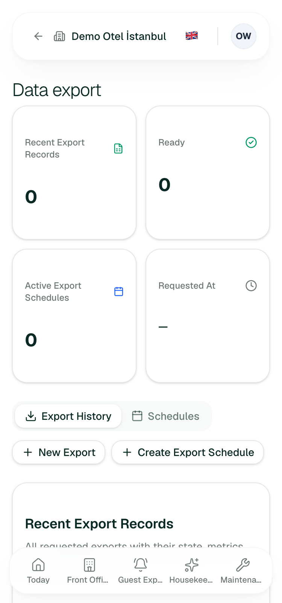
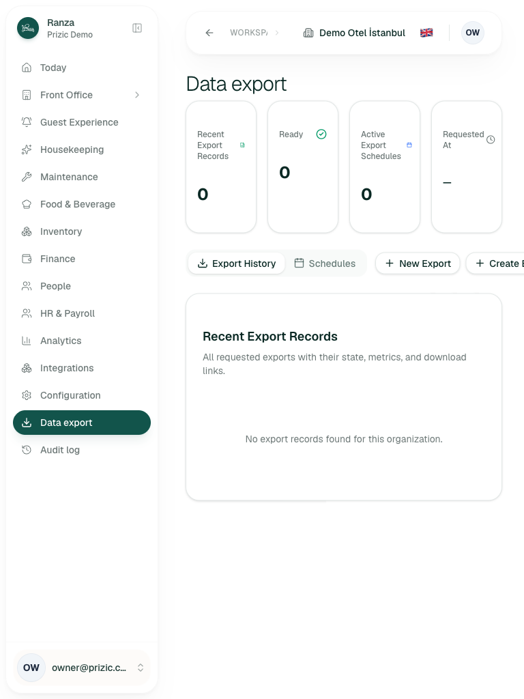
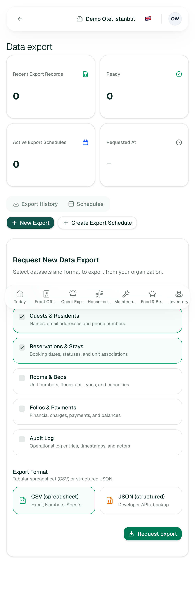
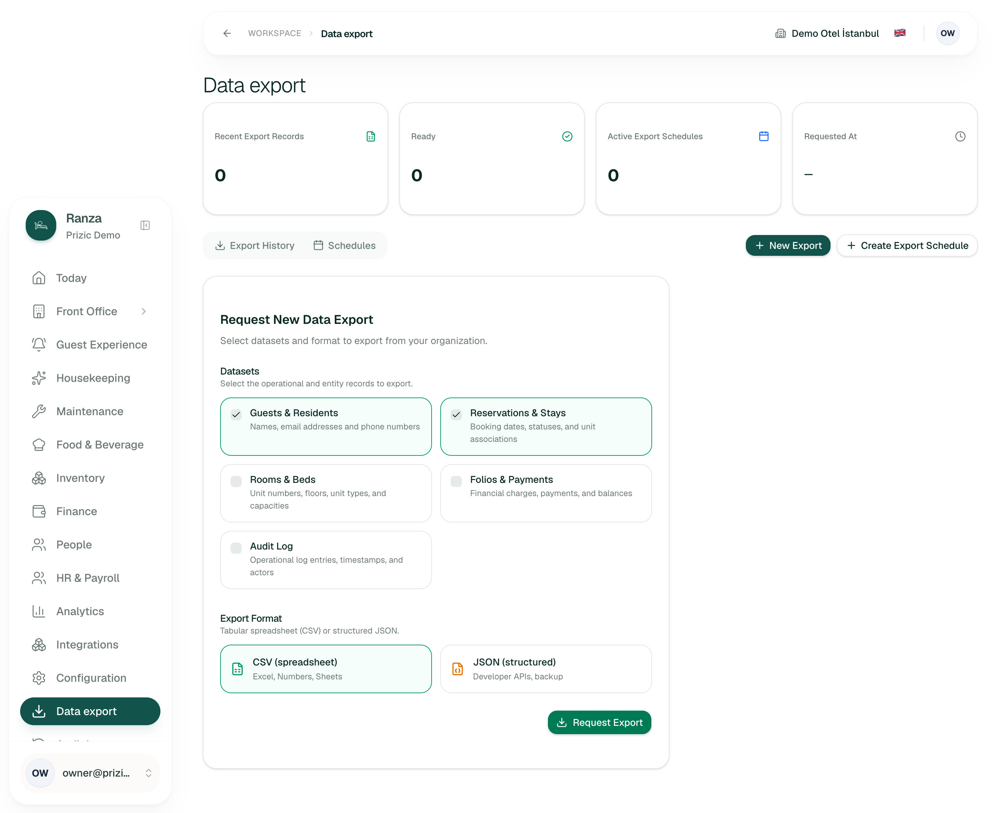
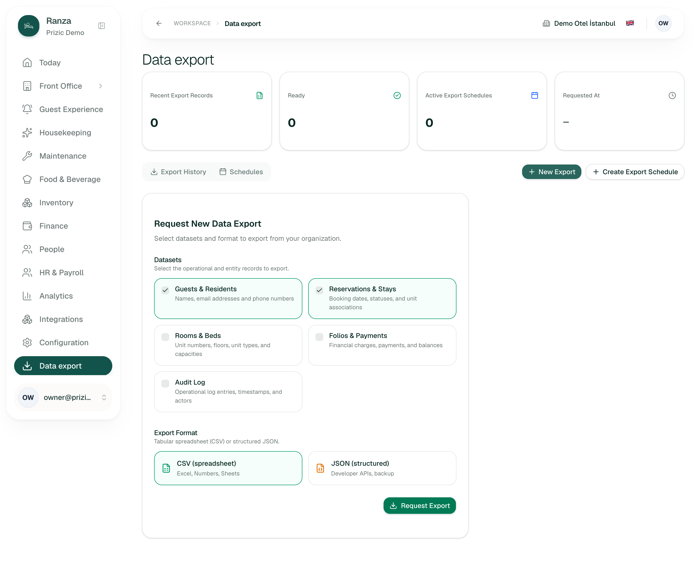
3. Jobs
Pass/fail test written before the attempt. Times are rough (a few seconds either way), not stopwatch measurements. "Stopped" means I reached the confirm step and did not submit.
| Job | Pass/fail test (written first) | Result | Seconds | Clicks |
|---|---|---|---|---|
| J1 First time: find Data export and understand what I can get (Owner) | Within 30 s I can say which data I can take out and which I cannot. | Fail. Found it in the rail at once and the five datasets are plain words, but nothing says what is not covered (DX-07), the scope (DX-04) or the personal-data aspect (DX-06). | ~40 | 2 (rail, New Export) |
| J2 "Everything for the tax office" (Finance accountant) | I can ask for one year of financial records and get a file named for it. | Fail. No date range. The default ticks Guests and Reservations, which Finance may not export (DX-02). Stopped before submit; not persisted. | ~60 | 3 |
| J3 "My guests list for the new software" (Owner) | One CSV with only guests that a new system could import. | Fail by default, pass if I untick Reservations. The pre-ticked Reservations would stack a second table into the same file (DX-03, inferred). Stopped before submit. | ~30 | 3 (rail, New Export, untick) |
| J4 Large volume: export a big hotel's folio lines | If it is too large I am told what to do. | Fail (inferred). Failure text is "Too large to export." with no next step (DX-05). Could not test: no data and no submit. | n/a | n/a |
| J5 Error recovery: a user without the right opens the page | The message names the real cause and what to do. | Fail. Front Desk typed URL gets the Subscription message (DX-01). The rail correctly hides the link. Reproduced once. | ~25 | 0 (typed URL) |
| J6 Under pressure: "the auditor is here, give me all folio lines now" | I can see the request move to ready and download it without leaving the page. | Not run. Stopped before submit. From code the row refreshes by itself every 5 s and the worker polls every 15 s, so about 20 s to Ready (inferred); no elapsed-time or stuck warning (DX-11). | n/a | n/a |
| J7 Later assurance: "nothing is trapped" | From this page alone I can name every module whose data can and cannot leave. | Fail. Five datasets listed; the unlisted modules are not mentioned (DX-07). | ~30 | 1 |
| J8 Set up a monthly export | I can say when it will run and where the result will appear. | Partial. Form reached; Create Schedule is disabled until a name is typed (code and screenshot 05). No weekday, time, or delivery explanation (DX-12). Stopped before submit. | ~45 | 3 |
| J9 Switch to Turkish and Arabic | Everything translated, Arabic mirrors. | Pass with the small bidi glitch (DX-18). Verified in 06 and 07. | ~30 | 2 |
4. Top changes
- I can see which datasets I am allowed to export and none of them is refused. Fix DX-02 and DX-01 together: gate the form by role and tell a no-permission user the truth.
- I can export one year, not all history, and the page says what scope I am getting (DX-04 now, date range in section 6). Removes the tax-office workaround and most of the "too large" dead end (DX-05).
- I get a file I can open and recognise: name with hotel, dataset and date (DX-08), headers and amounts a person can read (DX-10), and a clear note when several datasets share one CSV (DX-03).
- I know what is in the file before I trust it: record counts on the row (DX-09).
- I know what I am handling: a personal-data and 7-day-availability notice on the form (DX-06).
- I can tell what is not exportable and when I would lose access (DX-07).
- When an export fails or expires I can ask again in one click, and a stuck request says it is stuck (DX-11, DX-13).
- I can use it on a tablet (DX-14, DX-20).
5. Inconsistencies with sibling screens
- Audit log: that page has date filters and is hidden from Finance; Data export has no date filter and offers the Audit log as a dataset to Finance, who cannot open that page (rail verified for Finance: no Audit log entry; the dataset checkbox is enabled, verified).
- Headings: "Recent Export Records", "Active Export Schedules" are Title Case; Today uses sentence case ("Needs attention", "Today's movements").
- Names: the dataset "Folios & Payments" is called "Finance" in the rail; the rail item for the audit log is "Audit log" and the dataset "Audit Log".
-
No-access message: this page reuses the "not in your
Subscription" empty state also used for modules that are genuinely not
subscribed (shared
notEntitledTitle), so it cannot tell the two cases apart (inferred frompage.tsx). - Back button (ADR 0035): present on this page, leads to Today, mirrors in Arabic (verified in 01, 07).
-
Date range: the sibling Date range field
(flight-style picker) exists in
packages/uiand is not used here.
6. Not built / needs backend work
Kept apart from the defects above.
-
Date range or any filter on an export (all rows, all
dates). Not in
edge-cases.csvat all, not in the roadmap line for data export. Needs a request column and the export functions to take it. Verified absence in the form; code confirms the request carries only datasets and format (requestExportinput). - One file per dataset (zip): EXP-DEF-02, deferred. Until then, several datasets in CSV are stacked.
-
Object storage for files: EXP-DEF-01, deferred. Files
are text in a database column, bounded at 25 MiB and 100,000 rows per
dataset; the worker builds the file in memory before storing it
(inferred from
runner.ts,render.ts). - Exporting after a Subscription ends: EXP-DEF-03, an open owner decision. Today the answer is no data except the audit log.
-
A read permission for guests and reservations
(
front_desk.read): EXP-DEF-04, proposed. Source of the Finance refusal in DX-02. -
Datasets for the rest of the product (staff, HR and
payroll, rates, food and beverage, inventory, maintenance,
housekeeping and guest-experience records): none exists in
datasets.ts. Whether these are in scope is a product decision; blueprint section 13 forbids building ahead of a workflow, so this needs the owner. - Excel (.xlsx): removed on purpose (EXP-S1-08: "nothing ever wrote one"). CSV opens in Excel with a UTF-8 byte-order mark.
- Delivery of scheduled exports (email, storage, webhook): nothing is sent; results stay in the page for 7 days.
- Edit or delete a schedule; keep an export longer than 7 days; per-Property exports: not in the code or the edge cases.
-
Observability: the request and the download are
audited (
data_export.requested,data_export.downloadedinmodule.ts, and both are in the Audit log screen's action list). Completed and failed are published as events, not audit rows (EXP-S1-29, 30). No export existed on staging, so I could not look at a real audit entry (unknown).
7. What already works well and must not regress
- Permission-aware rail verified: Owner and Manager see Data export and Audit log, Finance sees Data export only, Front Desk and Housekeeping see neither.
- Plain dataset names and one-line descriptions in all three languages verified; Turkish and Arabic fully translated, Arabic mirrored including the back arrow and rail (screenshots 06, 07).
- Back button at the leading edge of the page bar and the empty states with a sentence, not a blank table verified.
-
Turkish characters in CSV
inferred: the file begins with a
UTF-8 byte-order mark and the response is
text/csv; charset=utf-8, so Excel will read İ, ş, ğ and Arabic names. Cells starting with=,+,-,@are neutralised against formula injection, numbers (including negative reversals) are left alone, rows end in CRLF. - Loud failure over a quietly cut file inferred: above 100,000 rows or 25 MiB the export fails instead of handing over a truncated file that looks complete.
- Failure reasons are sentences, not enum codes, in all three languages inferred (messages file).
-
Safe by construction
inferred: the request button is
disabled while sending and with no dataset ticked, Create Schedule is
disabled with no name, the file body is never in the list query, the
download is permission-checked and audited, and a render failure shows
a retry page instead of an empty list (
error.tsx). - Pending exports refresh themselves every 5 seconds without a reload inferred.
- No horizontal overflow at 375 px verified.
Method notes
-
Read before touching the UI: repo
CLAUDE.md,docs/features/data-export/(edge-cases.csv with its 53 rows,states.mmd,use-case.mmd),docs/roadmap.md, page and component code,server/data-export.ts, the download route, the data-export package and the worker's schedule intervals. - Signed in once per role in separate isolated browser contexts (Owner, Finance, Front Desk, Manager, Housekeeping). A second Organization was not checked (staging has one).
- I pressed no submit, Download, Pause or Resume button. Dialogs: there are none on this page. Console and network errors were not captured.
- Keyboard: only the format picker was probed (DX-21). Tab order through the tabs, checkboxes and Request button was not walked; unknown.
- The 375 px check used device emulation; the plain window resize bottoms out at 500 px (screenshot 11).